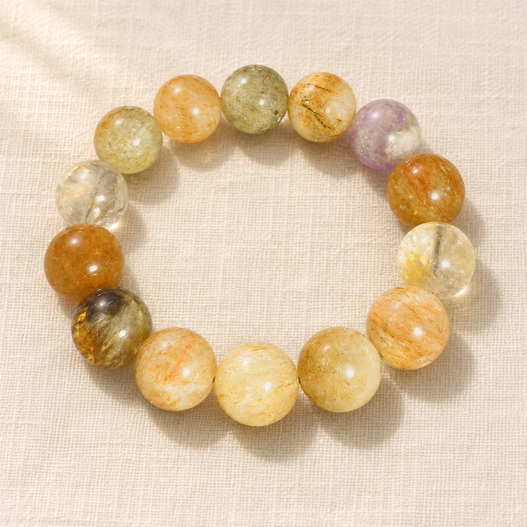
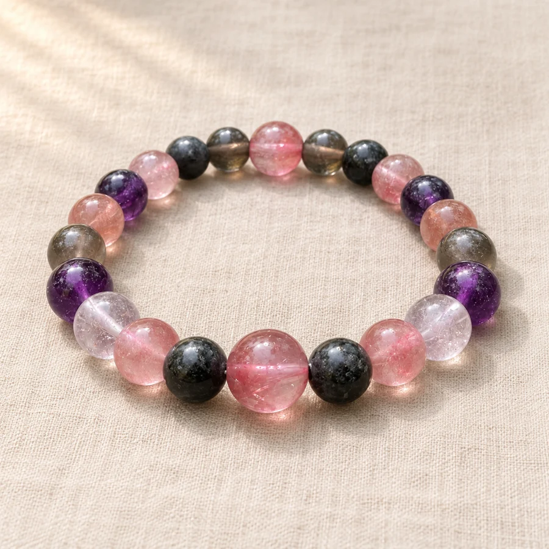
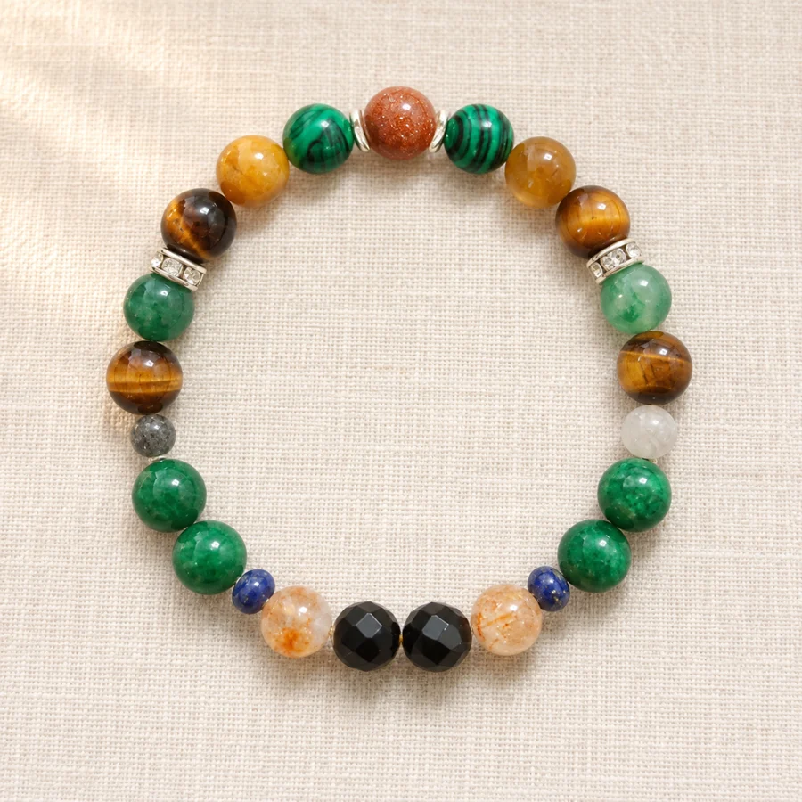
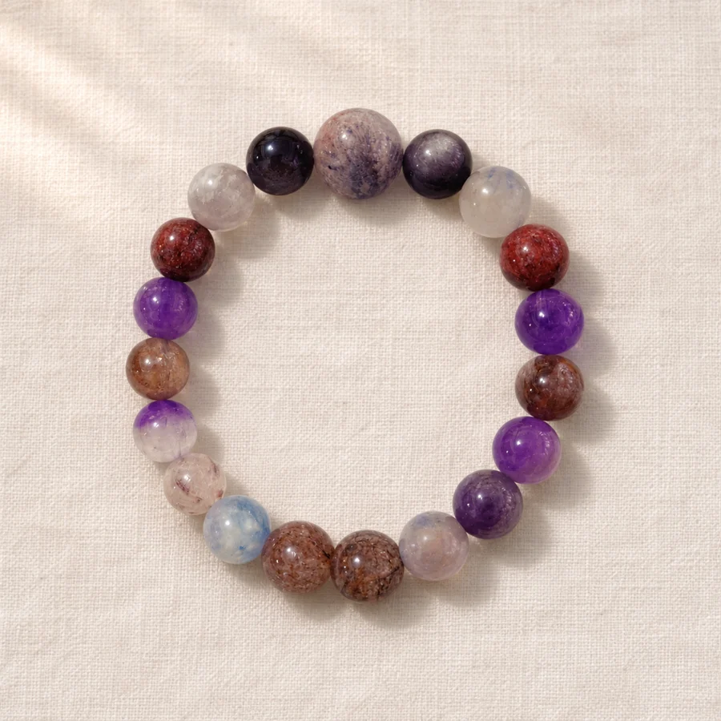
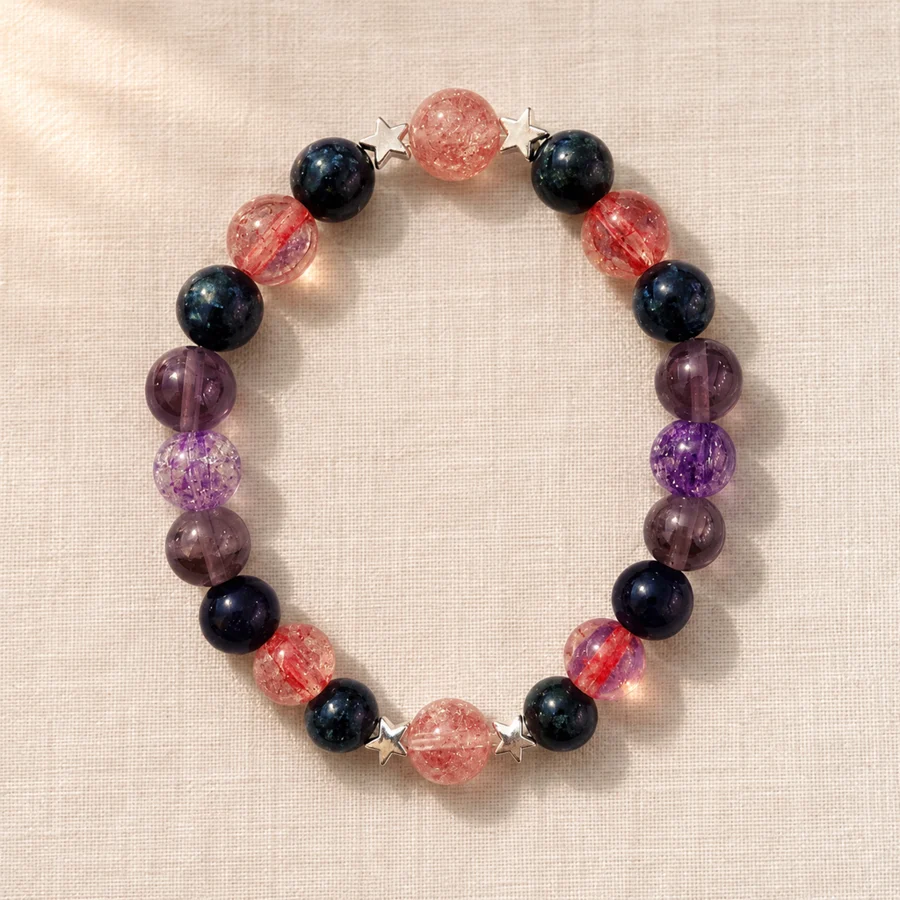

澤地萃（上兌澤・下坤地）・金縷・匯聚
卦意：澤水匯聚在大地之上，象徵人與資源的聚合。萃卦講的是「聚」：志同道合的人聚在一起，事情自然水到渠成。
適合的你：你可能正準備開啟一個新團隊、新專案，或想讓身邊的人脈與機會慢慢靠攏過來。這時最需要的是凝聚力，以及讓人願意靠近的溫暖。
建議石種：金髮晶、黃水晶、白水晶。金黃色系向來被視為豐收與匯聚的顏色；金髮晶裡一絲絲的金色髮絲，像把四散的力量收攏成一束，正好呼應萃卦「聚而成事」的寓意。

我們相信，每一條手鍊都該有它的理由。先抽一張易經牌卡，讀懂此刻的卦象，再從六十四種心境裡，替你挑出最貼近的那幾顆水晶，一顆一顆親手串起來。
很多人挑水晶，是先看顏色、再看價錢。但同一條手鍊，戴在剛換工作的人手上，和戴在正在修補感情的人手上，意義完全不同。
所以我們換個順序：先抽一張易經牌卡，看看此刻的自己站在哪個卦象裡，再從卦意去找最貼近你的那條手鍊。易經講的不是算命，而是「變」：看清局勢、順勢調整。水晶則是把這份提醒戴在手腕上，每次低頭都想起當下的心意。
以下是本季的五張主打卦卡，每一張都配好了一條手作手鍊。你可以直接挑最有感覺的那張，也可以預約現場抽卡，讓卦象替你決定。
卦意：澤水匯聚在大地之上，象徵人與資源的聚合。萃卦講的是「聚」：志同道合的人聚在一起，事情自然水到渠成。
適合的你：你可能正準備開啟一個新團隊、新專案，或想讓身邊的人脈與機會慢慢靠攏過來。這時最需要的是凝聚力，以及讓人願意靠近的溫暖。
建議石種：金髮晶、黃水晶、白水晶。金黃色系向來被視為豐收與匯聚的顏色；金髮晶裡一絲絲的金色髮絲，像把四散的力量收攏成一束，正好呼應萃卦「聚而成事」的寓意。

卦意：山上有澤，山氣與水氣相互感應。咸就是「感」，不需要用力說服，真心自然會被對方感受到。
適合的你：你在意一段關係：也許是心儀的人、伴侶，或想修補的友情。咸卦提醒你，以誠待人，比任何技巧都更能打動人心。
建議石種：草莓晶、紫水晶、粉晶。粉紅色的草莓晶溫柔不張揚，傳統上被視為人緣與好感的象徵；搭配紫水晶的沉靜，讓熱情不急躁，剛好是「感而遂通」的節奏。

卦意：前有險水、後有高山，蹇卦描述的是寸步難行的處境。但卦辭也說「見險而能止，知矣哉」：看見危險懂得停下，正是智慧。
適合的你：最近卡關了嗎？計畫一再延宕、努力好像看不到回報。蹇卦不是叫你放棄，而是先穩住腳步、回頭檢視自己，再找對的路繞過去。
建議石種：虎眼石、孔雀石、黑曜石。虎眼石沉穩的金褐光澤，常被當作勇氣與定力的象徵；孔雀石的層層紋路像山路蜿蜒，提醒你一步一步走，也能走出困境。

卦意：高山藏在大地之下，有實力卻不張揚。謙是六十四卦中唯一「六爻皆吉」的卦，越懂得放低姿態，越能走得長遠。
適合的你：你也許剛升遷、剛被肯定，或正處在順風的位置。謙卦提醒你：保持謙和、廣納意見，好運才會留得久。
建議石種：紫水晶、白水晶、茶晶。紫水晶的深紫內斂而有層次，向來與沉靜、智慧連在一起；白水晶柱的清透則像一顆不設防的心，合起來就是「謙謙君子」的樣子。

卦意：雷聲在山上響起，聲勢不大卻足以提醒。小過卦說「可小事，不可大事」：此時適合把小事做好，不宜冒進。
適合的你：你可能很想一口氣做出大改變，但時機還沒成熟。小過卦要你量力而行，先把細節顧好，力氣留給真正關鍵的時刻。
建議石種：黑曜石、草莓晶、紫水晶。深色的黑曜石給人收斂、守護的感覺，像替自己踩一下煞車；點綴其間的草莓晶與紫水晶則保留一點溫度，讓謹慎不等於退縮。

所有手鍊皆為手工串製，附禮盒包裝。
可以。我們會用白話說明卦意，你只需要帶著一個在意的問題來就好。
不是。易經談的是「變化」與「應對」，卦卡幫你換個角度看處境；手鍊則是把這份提醒戴在身上。
我們不保證任何療效或改運效果。水晶的意義在於寓意與陪伴，讓你在低頭時想起當初的心意。
用軟尺貼著手腕骨量一圈，再加 1–1.5 公分就是適合的手圍。不確定的話，下單時備註，我們會協助確認。
天然礦石每一顆紋路、色澤都不同，實品與照片可能略有差異，這也是每條手鍊獨一無二的地方。
現貨手鍊收到 7 天內可退換；客製手鍊因依個人卦象與手圍製作，恕不接受退貨，但可免費調整手圍一次。
預約線上或現場抽卡，我們會在一個工作天內回覆你可預約的時段。 Email：timmy.tsou.tw@gmail.com（台北）